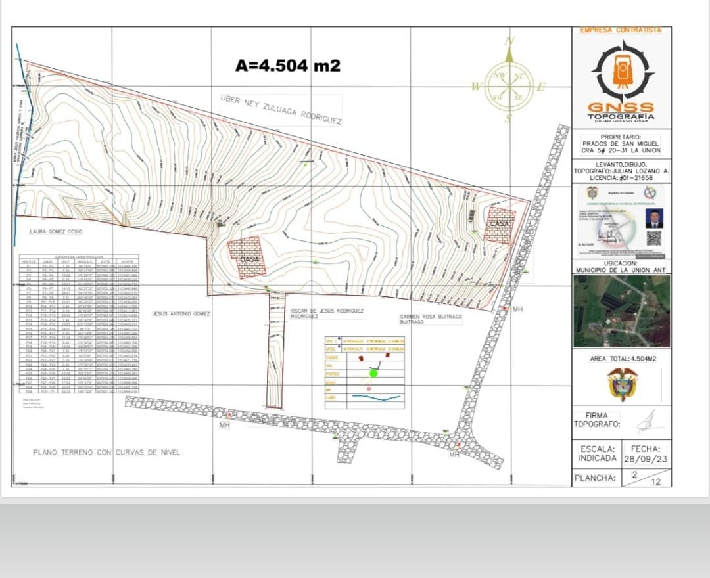
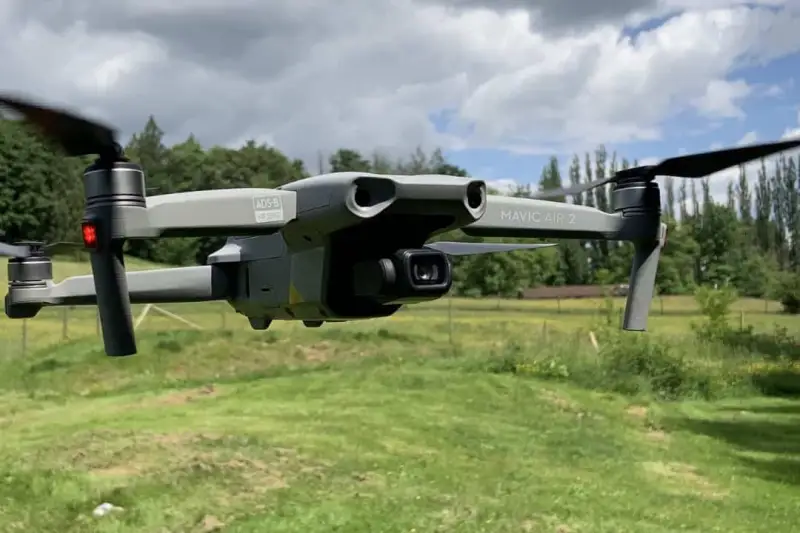

POSICIONAMIENTO GNSS RTK
Receptores GNSS de doble frecuencia con tecnología RTK para coordenadas con precisión centimétrica en tiempo real. Ideal para puntos de control geodésico y linderos en la topografía antioqueña.
- Precisión: ±1cm + 1ppm
- Magna-SIRGAS
- Validez legal
- Terrenos difíciles de Antioquia

MOJONES DE CONCRETO
Mojones de concreto de alta resistencia con placas metálicas grabadas. Resistentes a las condiciones climáticas del oriente antioqueño.
- Concreto 3000 PSI
- Placa metálica grabada
- Instalación con nivel
- Documentación fotográfica

RECTIFICACIÓN DE ÁREA
Levantamiento topográfico preciso para rectificación de escrituras ante notarías y catastro en Antioquia.
- Levantamiento completo
- Análisis de diferencias
- Informe para notaría
- COTIZAR

DESENGLOBES
División de predios rurales y urbanos con documentación legal completa para el registro.
- Levantamiento del predio
- Diseño de subdivisión
- Monumentación
- Fincas cafeteras

FOTOGRAMETRÍA CON DRONE
Levantamientos topográficos con drone DJI Mavic Air 2 para generación de modelos digitales de terreno (MDT), modelos digitales de superficie (MDS) y ortofotos de alta resolución.
- DJI Mavic Air 2
- Modelos 3D
- Ortofotos georreferenciadas
- Curvas de nivel
